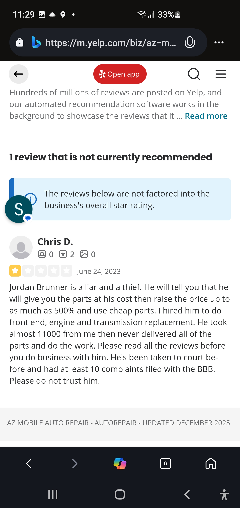

Swift Fix Mobile Auto LLC (Queen Creek, AZ) — Consumer Warning
Queen Creek / San Tan Valley, Arizona · Compiled from public records · Last updated November 15, 2026
Before you hand your keys — or your money — to Swift Fix Mobile Auto, read the documented public record behind the name.
The business
| Legal name | Swift Fix Mobile Auto LLC (Arizona) |
| Owner / member | Jordan James Brunner (per Arizona Corporation Commission filing, August 2026) |
| Address | 776 W Trellis Rd, Queen Creek, AZ 85140 |
| Phone | (520) 683-4078 |
| Previously operated as | AZ Mobile Auto Repair (Glendale, AZ, since 2020) and AZ Mobile Auto (Anthem, AZ) — same owner |
| Earlier phone numbers | (480) 640-7690 (BBB profile, AZ Mobile Auto Repair) · (480) 492-4028 (Arizona Secretary of State trade name record) |
| Earlier address | 5407 N 45th Dr, Glendale, AZ 85301 (Arizona Secretary of State trade name record) |
The public record
Summaries of police, sheriff and court records naming the owner. Copies of the reports are on file with the author of this page and were not posted, to protect the other people named in them.
- Cottonwood Police report (May 2017): according to the report, Brunner was arrested as the driver who dropped off and picked up the men who burglarized the Hookies N Bookies vape store in Cottonwood.
- Yavapai County Sheriff report (March 2017): according to the report, Brunner admitted to a deputy that he stole his sister's debit card; $213.04 was charged before the card was deactivated, and he offered to pay it back.
- Cottonwood Police report (October 2018): according to the report, Brunner was cited for taking his grandmother's business debit card (Sedona Air Tours) and charging $551.18 — while he was on probation for the 2017 offense.
- Cottonwood Municipal Court: a misdemeanor case for fraudulent use of a credit card, found through an Arizona court records search.
- Maricopa County Sheriff (February 2026): misdemeanor theft report naming Jordan J. Brunner as the suspect. (Report IR26003144)
Swift Fix Mobile Auto reviews — and the BBB record
Swift Fix Mobile Auto's Google listing shows a perfect 5.0 stars — from exactly two reviews, both posted within weeks of the LLC's formation in August 2026. One appears to come from someone connected to the business, and two reviews are too few to show a track record.
Compare the Better Business Bureau record for the same owner's prior business:
- BBB lists Mr. Jordan Brunner, Owner for AZ Mobile Auto Repair (Glendale), with AZ Mobile Auto listed as an alternate name. Not accredited.
- June 2025: BBB rated AZ Mobile Auto Repair F — "Failure to respond to 10 complaint(s)."
- May 23, 2026: BBB rated it D- — "Failure to respond to 3 complaint(s)."
- A separate BBB profile under the alternate name AZ Mobile Auto (Anthem) was rated F — "Failure to respond to 11 complaint(s)."
- Today: the Glendale profile shows B- with a single complaint. The earlier ratings and complaints no longer show on the surface — consumers deserve to know they existed.
Complaints filed with BBB in 2023 and 2024 describe paying upfront for parts and work that were never delivered, parts being marked up far above cost, and a missing original part and vehicle key. On Yelp, AZ Mobile Auto Repair had 30 reviews "not recommended" (hidden from the star rating) in August 2025; by December 2025 Yelp showed only one.
All of this is documented by dated screenshots in the evidence section below.
The pattern
AZ Mobile Auto Repair (started 2020; BBB F, 10 complaints) → AZ Mobile Auto (trade name filed June 2023; BBB F, 11 complaints) → Swift Fix Mobile Auto LLC (August 2026). Same owner, different business name. The Arizona trade name registration for "AZ Mobile Auto Repair" expired on October 25, 2026.
Why the pattern matters: each new name starts with a clean slate, so the complaint history doesn't follow the owner. In my opinion, when ratings improve and complaints drop out of view while the same owner keeps reappearing under new names, consumers are seeing a cleaned-up picture rather than the full record.
Evidence — the BBB record, as BBB displayed it


Evidence — state business records


Evidence — Yelp



See every screenshot in the Evidence Index
Verify it yourself
Everything on this page comes from public records and dated screenshots. Check them directly:
- BBB profile — AZ Mobile Auto Repair (Glendale)
- Arizona Courts — public access case lookup (search: Jordan Brunner)
- Arizona Corporation Commission — eCorp business entity search (search: Swift Fix Mobile Auto; AZ Mobile Auto)
- Arizona Secretary of State — trade name search (search: AZ Mobile Auto Repair)
- Arizona Attorney General — consumer complaint form (to file your own complaint)
Before paying anyone for mobile auto repair: confirm the exact legal business name, check the owner in state filings, read the complaint history — and get the estimate in writing.